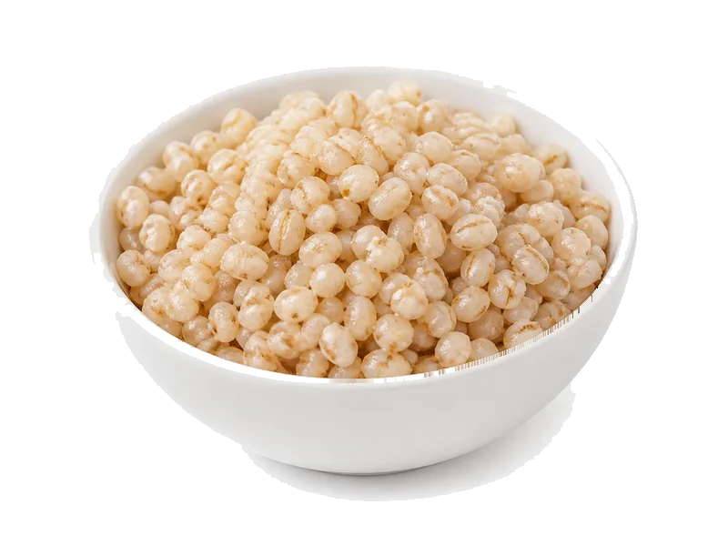

Zboża i kasze
Pęczak jęczmienny (gotowany)
Pęczak jęczmienny (gotowany) to produkt z kategorii Zboża i kasze. Na 100 g znajdziesz 2.6 g białka (proteinów), 123 kcal kalorii, 28 g węglowodanów oraz 0.4 g tłuszczu — idealne dane przy zdrowym odżywianiu, odchudzaniu lub budowie masy mięśniowej. Współczynnik ok. 47.3 kcal na 1 g białka pomaga porównać gęstość odżywczą. Wartości na 100g ugotowanego.
Kalorie123 kcalna 100 g
Białko / proteiny2.6 g
Węglowodany28 g
Tłuszcz0.4 g
Cena (szac.)~0,80 złza 100 g
Ceny zaktualizowano: maj 2026 (szacunek — ceny w popularnych supermarketach)
Porcja: porcja (200g)
| Kalorie | 246 kcal |
|---|---|
| Białko | 5.2 g |
| Węglowodany | 56 g |
| Tłuszcz | 0.8 g |
| Cena (szac.) | ~1,60 zł |
Szczegółowe składniki odżywcze na 100 g
| Wartość energetyczna (kalorie) | 123 kcal |
|---|---|
| Białko (proteiny) | 2.6 g |
| Węglowodany | 28 g |
| Tłuszcz | 0.4 g |
| Tłuszcze nasycone | 0.1 g |
| Tłuszcze nienasycone | 0.3 g |
| Witaminy i minerały | Magnez, Tiamina (B1), Żelazo |
| Współczynnik kcal / 1 g białka | 47.3 |
| Cena produktu (szac. za 100 g) | ~0,80 zł |
| Cena za 100 g białka (szac.) | ~30,77 zł |